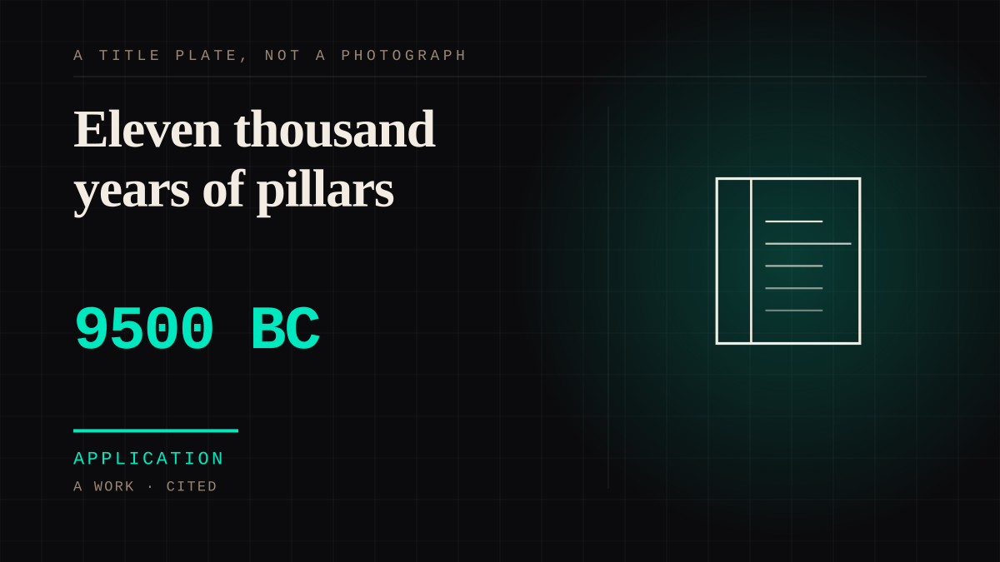

A work · 9500 BC–8200 BC · Deep prehistory
Eleven thousand years of pillars
Round enclosures on a hillside in Anatolia holding T-shaped pillars carved to suggest human figures, built by people who had not yet domesticated a single animal - used for over a thousand years, then deliberately filled in and built over.

The oldest thing on this site with a claim to be about figures, and the interpretation is genuinely open, which is the point. What is not in dispute: hunter-gatherers cut limestone into anthropomorphic forms with stone and bone tools, set them upright in circles, carved them with foxes, scorpions, lions and vultures, returned to them for fourteen hundred years, and then filled the enclosures in on purpose. There is no hearth, no rubbish pit and no sign that anyone lived there - people travelled to the place. UNESCO's own nomination describes the pillars as believed to represent 'ancestors, perhaps even incipient deities', and other readings have them as totemic or protective figures. Nobody has settled it, and the carvings include a great many frightening animals: the dominant imagery is not a kind face but lions, spiders, snakes and scorpions. What this site can claim is narrow and still large: for at least a millennium, people made representations of beings, went out of their way to be near them, and eventually chose to close the place where they stood. Whether the beings were ancestors is the question this entry cannot answer, and saying so is more useful here than guessing.
Application. One-sided attachment put to work on purpose. Creator economies, community, fandom as infrastructure, and the things that genuinely help people. Not automatically good - a tool with an obvious use is a tool that will also get a bad one.
Where it sits
3000 BC Before 0 · 9500 BC 1 BC
Provenance · 4 source record(s)
- unverifiedDating, construction and the absence of settlement: the structures are among the earliest evidence worldwide for human-made megalithic buildings constructed specifically for the ritual requirements of their prehistoric population, erected between approximately 9600 and 8200 BC in the Pre-Pottery Neolithic, some 6,000 years before Stonehenge. The T-shaped pillars 'embodying a schematised anthropomorphic figure' were carved from the adjacent limestone plateau with stone and bone tools. The enclosures were probably used for public rituals, possibly of a funerary nature, and feasting.Göbekli Tepe (Turkey), No 1572: nomination and evaluation. UNESCO World Heritage Centre, 2018. ↗
- unverifiedThe interpretive status, in the words of the nominating body, and the deliberate closure: 'The anthropomorphic T-shaped pillars are believed to be representations of ancestors, perhaps even incipient deities.' The enclosures of Layer III were then 'intentionally backfilled', the fills containing numerous animal bones 'probably the result of large feasts'.Executive Summary, Göbekli Tepe (Turkey), No 1572. UNESCO World Heritage Centre. ↗
- unverifiedThat it was a place people travelled to rather than lived: the remains of undomesticated plant material and tens of thousands of wild animal bones - chiefly gazelle - were recovered, 'but the lack of trash pits, hearths, or other signals of domestic life indicates that it was most likely not a permanent settlement'; most experts identify it as a ritual site 'that may have attracted worshipers from great distances'. First investigated in the 1960s and dismissed as a medieval cemetery before its true age was established in the 1990s.Gobekli Tepe. Encyclopaedia Britannica. ↗
- retrievableSite description and the imagery: circular enclosures each containing two large T-shaped pillars ringed by smaller stones facing inward, the tallest around 16 feet and up to 50 tons; carvings including foxes, scorpions, lions, vultures and other wild animals; site known by the Turkish name meaning 'belly hill'.Göbekli Tepe. Wikipedia. ↗
Connected · 4 out, 2 in
Reported as a story
It sits in
The full timeline → · The database → · See it in the atlas →